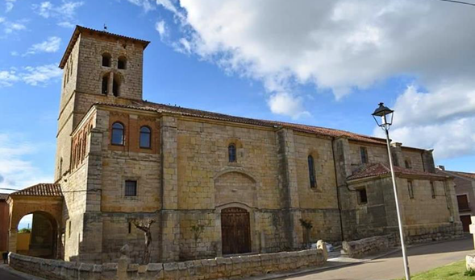
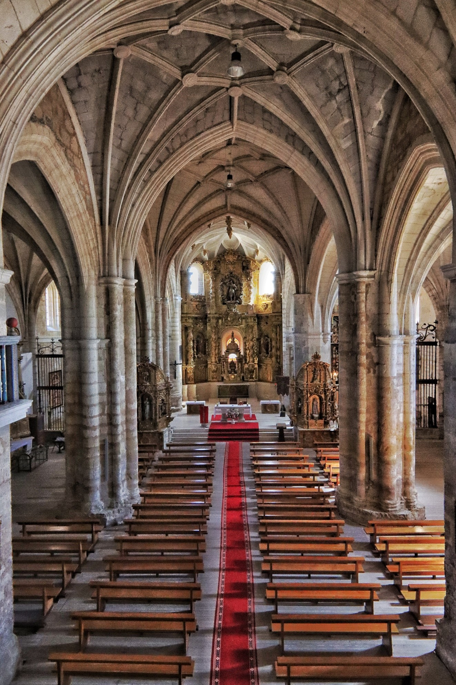
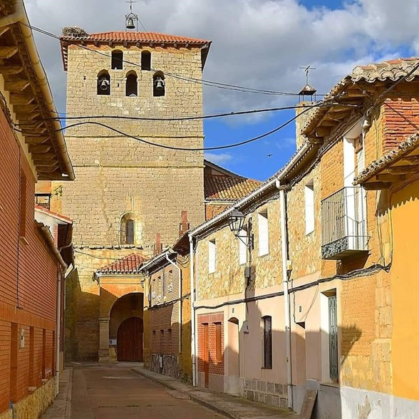

Branding
Actividades
Arquitecture
Contacto
Fotos
Historia
Museo
Tradiciones
Visita
Bienvenido/a a la página oficial de la Iglesia Parroquial de San Miguel Arcángel

Vistas exteriores de la iglesia

Interiores de la iglesia

Vistas exteriores de la iglesia